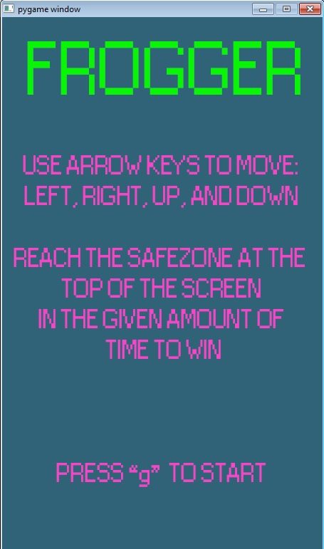
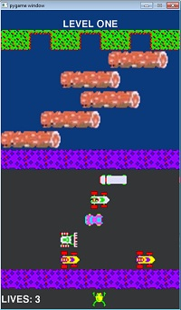

Final Project

Description:
For the final project of the Exploring Computer Science class, I decided to make a game using python. For the python project, we had to include variables, class files, lists, interaction with the keyboard, and have at least 2 main scenes or levels. I decided to recreate a Frogger type game, where the user must cross a road without being hit by a car and then cross a river without falling in, all within a certain amount of time. All the cars move at different speeds and, while the original game has moving logs, my version has stationary ones that make it easier to cross the river.